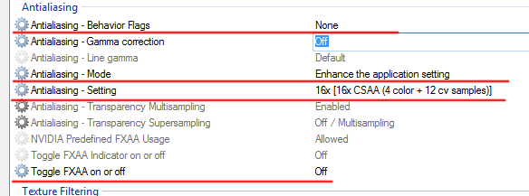

Does anyone know which profile should I edit on nvidia inspector 1.9.6.6? I use the sdk on steam? Just would like to experiment with the nvidia options (yes I know I’m greedy but I do that with all games to see the difference). Is this possible? I noticed that the mod is installed in “C:\Program Files (x86)\Steam\steamapps\sourcemods\BMS” but there’s a hl2.exe in my “C:\Program Files (x86)\Steam\steamapps\leonhartgr\source sdk base 2007” folder. When I try to associate the hl2.exe in that folder it doesn’t allow it which means there is already a profile. but as I notice the default profiles are Half-Life 2 (associated .exe should be in half-life 2\hl2.exe. hl2.exe) some others for deathmatch, episode 1, episode 2, cinematic mod etc. and a half-life source (exe in half-life source\hl2.exe). But of course not Black mesa profile because it’s new.
edit: Ok I figured it out. It was clearly the Half-Life 2 profile
Well for anyone interested I used those nvidia inspector settings and noticed some improvement with LOD -3000 and some other tweaking. Well all full in Black Mesa Video Options (yes even depth of field)
You will want to create a new profile called “Black Mesa” or something like that. This will give you a blank slate. Then when you add the hl2.exe to the profile from the SDK Base 2007 folder, change the file type in the bowser from “Application EXE Name” to “Application Absolute Path”. This will associate the profile with only that hl2.exe.
Also, I believe you will want to use the Half-Life 2: Episode 2 Anti-Aliasing and Ambient Occlusion compatibility bits in the profile since this game uses the Orange Box engine. But I’m still testing those out.
Edit: I tried some different negative LOD settings and couldn’t find a difference.
16xQ CSAA will definitely provide far superior AA.
Right now I have Black Mesa set at 2x MSAA in game and I’m using NVIDIA Inspector with the enhance AA setting. I currently have it set to 4xS (4x SSAA + 4x MSAA) and 4x TrSSAA. So far it has worked flawlessly and I’m generally still getting 60 FPS.
I’m aware it’s pretty overkill, but I have two GeForce GTX 660 Ti’s in SLI and I’m gonna make the most of them.
Only thing bugging me is that I haven’t been able to get Ambient Occlusion to work properly yet…
Em, AFAIRK 4xS is a 1x2 OGSSAA 2xMSAA. And here is what nVIDIA Inspector says on this: “4xS [Combined: 1x2 SS + 2x MS (D3D only)]”.
If you have this one set coupled with 4xTrSSAA (which I assume to be “4x Sparse Grid Supersampling” and not “4x Supersampling”) then de-facto you get 2xSGSSAA coupled with 2xSSAA. It’s not an overkill, it’s a waste of the fillrate really without much benefits :-). If you want to use fullscreen SGSSAA - you should use “4x [4x Multisampling]” coupled with “4x Sparse Grid Supersampling”. Then you should apply LOD bias correction to make SGSSAA less blury.
P.S. I’m a bit jealous reading about your SLI GTX660 setup, it should do wonders in games :-).
Yeah, I was at work at the time and not at my home computer.
The setting I have is actually 16xS (2x2 SS + 4x MS) and 4x TSAA. It is the same as saying 4x OGSSAA + 4x MSAA and 4x TrOGSAA.
But you are right, since SSAA does well at full scene AA, the TSAA is pretty pointless.
Not exactly :-). What you essentially got is a 4-samples-based SGSSAA (4xMSAA + 4xTrSSAA) applied to a picture rendered in 4xTargetResolution which is then downsampled with linear interpolation (OGSSAA part). I.e. you’ve got something a bit better than 4x4 OGSSAA but a bit worse than what you could get by using 2x1 OGSSAA + 8x SGSSAA. And you really should adjust texture lod bias like if you were using 16x SGSSAA (it that were available) cause each target pixel is constructed from 16 samples for your case which could produce a lot of blur on “distant” pixels.
And I’am really-really-really jealous now, grrrrr!
Yeah me too… those b*tards are so expensive in my country! If I post my specs can you post images with the nvidia inspector settings i should use to have the best possible quality and detail. Not that I’m not happy with the current settings but I just want to push it a little further to see the difference! Thank you all guys for replying! Re-living the HL experience brings many pleasant memories back!
Well I use:
Microsoft Windows 7 Home Premium x64-based PC
Intel® Core™ i5-2310 CPU @ 2.90GHz, 3101 Mhz, 4 Core(s), 4
Installed Physical Memory (RAM) 8,00 GB
NVIDIA GeForce GTX 550 Ti (306.23 win7 64bit drivers)
1.023,69 MB Adapter RAM
What’s about your low FPS tolerance? Because I mostly play BM with exactly this one card:
And to remedy FPS dropdown problems as much as I could I had to switch into using shader-based postprocessing antialiasing (through injectSMAA) instead of normal approaches like simple MSAA or CSAA and have to use 1440x900 resolution instead of native 1920x1200. Thus all settings I use in nVIDIA Inspector for 550 Ti are basically like: “use application setting for aniso, force AA off, force AO off, force VSYNC off, enable all filtering optimizations that are available” and so on. But that’s because I’m highly sensitive to even slightest FPS drops below 60. In case you could accept that the game would run at ~10-15 FPS at some places, don’t mind a bit bluring, can tolerate some amount of tearing and do not sensitive to variable input lag - I’d suggest using 8x or 16x AF + 16xCSAA (enchance application settings, select 2x or 4x AA in BM) + FXAA + Adaptive Vsync On. You could went further and try something like 4xSGSSAA + AO but resulting FPS would be below the playable limit (i.e. in 20-30 range) even at 1440x900 resolution.
Ok sorry I always confuse MSAA (multisampling) with SMAA (subpixel morphological)… so you mean the mrhaandi’s SMAA injector “injectSMAA v1.2”? If yes do I extract the dx10 or 9 and in the source sdk folder? Or there is a certain method just for BM?
edit: Ok I read some of your FAQ. I don’t notice severe framedrop so is it better to inject SMAA? Or should I try the options you mentioned above in nvidia inspector?
I also notice in your FAQ that “Note: make sure you don’t use D3Doverrider to force vsync/triple-buffering for hl2.exe. It won’t work with SMAA injector. What you’d get would either no triple-buffering forced by D3Doverrider or no SMAA injected by SMAA injector.”
and
Note 2: Set “Antialiasing” to “None” in the game advanced video preferences dialog and do not force MSAA though GPU driver control panel. If you would try to use SMAA having “Antialiasing” set to anything but “None” in game you would end up with SMAA producing no visual results but eating up your GPU fillrate. If you try to force AA in game using GPU driver control panel while have antialiasing disabled in game you would end up with broken in-game reflection and refraction effects.
So should I use adaptive tear control and vsync on in nvidia inspector and 2x or 4x AA in BM advanced video settings? I also turned triple buffering off as instructed in your FAQ. I don’t like blur, only crispy detailed images.
Ok, so now all we need to do is to get the step by step of how to get the 16xQ Anti-aliasing settings in the menu. Pictures would be great because I am more of a visual learner.
Edit:
Even more simple:
In nVidia Inspector select the Portal profile.
Copy the Anti-aliasing Compatibility from Portal to Half-Life 2
Well, the real answer is: “it depends on what you want”. You would have to do some experiments to determine what settings do you like best.
If you don’t tolerate blur at all - all AA methods involving fullscreen pixel-shader based postprocessing effects like SMAA or FXAA are out of considerations. Same helds for any fullscreen antialiasing methods like Ordered Grid Super Sampling or Sparse Grid Super Sampling. Truth is that any super-sampling AA algo would introduce some amount of blur - it’s just the way it works. Thus to get as less blur as possible but still get some amount of AA at the edges of polygons you’re limited with using different variations of MultiSampling. Your GPU is not that powerful so I don’t think using anything higher than 4x MSAA possibly coupled with additional 12 coverage samples (which is 16x CSAA in nVIDIA “terms”) would be reasonable. To get this working set Antialiasing to 2xMSAA or 4xMSAA in the game video settings menu and couple it with the settings displayed in the picture below:
As for vsync, what to use depends on what you could tolerate more:
a) If you can’t stand tearing and want to get rid of it at the all costs: set vsync to On, play fullscreen, set Vertical Sync Tear Control to “Standard” in nvInspector and set “Vertical Sync” to either “Use 3D app setting” or “Force On”.
b) If you don’t use external post-processing filters injectors like injectSMAA - you could remedy a 60-30-60 stutters problems caused by enabling double-buffered vsync. You could do it using D3Doverrider by forcing vsync and triple buffered render queue ON for hl2.exe. Be sure to have “Maximum pre-rendered frames” set to “Use 3d app setting” or to anything other than “1” in nvInspector or forcing triple buffering on won’t have any effect.
c) Another way to remedy 60-30-60 stutters is to enable so-called “adaptive vsync” by setting Tear Control to “Adaptive”. It would make the game tear a bit when it can’t perform at 60+ FPS but you won’t get immediate FPS dropdown to 30 for these cases.
d) Having vsync on produce input lag. Having triple-buffered rendering with vsync could produce huge amounts of input lag. If you’re sensitive to it - there are several ways to remedy this problem. If you’re extremely sensitive to it - consider not to enable vsync at all.
e) Using adaptive vsync have it’s own unique disadvantage - it would produce usual vsync-related input lag when you have FPS in 60+ range and would produce next-to-none input lag when FPS drops down below 60. So you would have variable input lag depending on the FPS you have. There are no ways to really fix it so if you are not comfortable with it - do not use adaptive vsync at all, stick with no vsync or with using standard or triple-buffered vsync coupled with the solution listed next.
f) There’s a way to get ~60 FPS + no tearing + small amounts of input lag. You should limit maximum FPS to a value that is slightly lower than vsync frequency (i.e. to something like 58 FPS) and use vsync + forced triple buffering. In BM limiting FPS is as easy as including “fps_max 58” in your autoexec.cfg. For other games you might want to use other options like “Frame Rate Limiter” setting in nvInspector (warning: known to cause GPU driver hangs leading to complete OS hang sometimes) or using DXtory recording software in “DirectShow output” mode and setting “recording frame rate” to 58 FPS coupled with “Synchronize Video FPS” option turned on.
This way you would artificially limit the game to producing a lot of frames in advance and placing then in render queue (thus you’d remedy huge input lag problem typical for triple-buffered render queue + queue depths larger than 2 frames) and would still have a benefit of triple-buffered vsync not causing frame rate to drop to 30 as soon as your FPS drops into 60- range. There still would be a small amount of input lag though roughly equal to what you’d get with the ordinary double-buffered vsync.
Feel free to experiment and find a set of settings that would work best for your personal preferences. Sometimes the process of finding the optimum could be more entertaining than actually playing the game :-).

You are amazing “Sir”… your walkthrough was really helpful. “Synchronize Video FPS” is in inspector settings? I notice you do not use “Gamma correction” and “Line Gamma”. Doesn’t it affect the lighting? And I was wondering about AO. Is there any use of it in the game? I was also curious if injecting enb would be of any use? I’ve experimented lots and lots of hours with gtaiv (lots of potential in modding) for years now that’s why I’m dealing with all these…
P.S.: I guess I don’t need to have inspector open everytime i play the game for the options to be in use right?
No, it’s the DXtory recording software setting, you could use it as kind-a max FPS limiter tool. It’s not the primary thing DXtory is intended to be used for but is still could be used for that. It’d a bit tricky though so I don’t recommend using it unless you’re familar with DXtory or if there are no other obvious ways to limit game’s max FPS.
nVIDIA Inspector eqvivalent for this one is “Frame Rate Limiter” (or a “Frame Rate Target” setting - don’t remember the exact spelling for that one).
It affects the appearance of the thin anti-aliased polygons (like ropes or wires at the distance) and transparency-antialiased things like vegetation and alike. I generally prefer to have it off as the visual impact IMO is negligible and I prefeur to have a bit more performance.
In case you’d find a way to have it working (I hadn’t checked if HL2:EP2 AO compatibility flags work with BM) you would get a bit more realistically-looking picture with approximated radiosity (i.e. a harsh simulation of the global illumination of the scene) at the cost of a lot performance. Is it worth it or not - you’d have to experiment and decide for yourself.
Not sure what are you talking about here. “enb”? Em.
Yep, it’s safe to close inspector as soon as you made all the modifications you like to the game profile. Actually Inspector is just a version of the nVIDIA Driver Control Panel optimized for geeks. It does nothing per se, all the thing it allows to control are implemented by the nVIDIA driver. For “ordinary users” there’s a set of pre-defined profiles nVIDIA creates and ships with the driver. Also you’re provided with the ability to change some restricted set of the settings using driver control panel. nVIDIA Inspector allows you to change all the settings that are used by the driver “under the hood” but it comes at expense of complexity and it’s easy to shoot yourself in the foot by misconfiguring the driver and having your app crashing badly or performing really slow due to incorrect settings set being used for them.
See I have no trouble with frames dropping unless I get near fire or smoke or have a poorly coded map to play on (the third not being an issue in BMS). The further away I get, the less of a problem it becomes. Seeing how the sprites used for fire and smoke were high enough quality in the first place (though I only have 24 ROP’s with my ASUS Brand GTX550ti) I see no reason why they should be Anti-Aliased (fire is artistically jagged anyway). Another one I might attempt is to copy the profile over from Portal 2 and see how that goes. Either way, next update from nVidia will clear all this out with a clean install.
Edit:
Why not post the profiles others create with the optimizations in place? Mind you it would have to be card specific.
The profit from posting profiles depends on what you expect to get from them. What are the “optimizations in place” you’re talking about? I.e., what are the things that you want to “optimize” using nVIDIA Inpector for BM?
Well, it seems that a while back when I first got my card, nVidia drivers for my ASUS ENGTX 550Ti, flames and smoke did not bother the frame rate one bit. The moment the r300 driver family came out on my card, Flame and Smoke sprites started dropping the frames from 200FPS at 1920x1080 to 25 at the same resolution. The further away from said sprites i got, the better the frame rate no matter how many sprites were on there. So really I am not sure if that is a fault in source engine…or with nVidia borking around with their drivers…my guess is the latter and so I am wondering what settings to activate to get the glorious frame rate back. Keep in mind it is only issues with Half-Life 2 based smoke and flame sprites…Star Craft 2 runs at Ultra with no issues.
Adding:
I am specifically looking for a balance between performance and art. I don’t like frame drops down below 50 because of tearing and shuttering. So I am not sure what settings in nVidia inspector would have to be activated. Mind you I did have to copy over the Anti-aliasing profile from Portal to allow BMS and other mods to recognize settings beyond 8xMSAA, but that is all i could figure out.
I have one more question. When I use the SMAA injector in other games (i.e. Alice Madness Returns) do I have to de-activate the triple buffer and vsync through nvidia inspector as well?
Can anyone answer to this question please?
Also see this.
Founded in 2004, Leakfree.org became one of the first online communities dedicated to Valve’s Source engine development. It is more famously known for the formation of Black Mesa: Source under the 'Leakfree Modification Team' handle in September 2004.


{kind=link}
{kind=link}